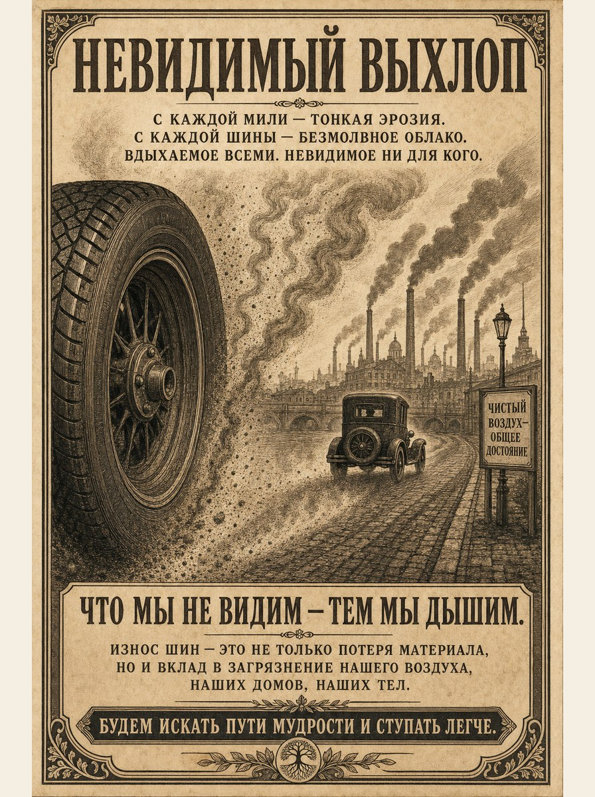

Автомобильная шина — новая сигарета
Почему изношенные шины — крупнейший источник микропластика, и почему мы делаем вид, что дело в давлении
Якобус ван Мерстеин · Мальта, июнь 2026
Большинство людей связывают пластиковое загрязнение с пакетами, трубочками и одноразовыми стаканчиками. Тем временем каждая машина — в том числе электрическая — едет по асфальту как невидимая пластиковая фабрика. По оценкам институтов вроде RIVM и TNO, изношенные автомобильные шины сегодня — крупнейший источник микропластика в нашей среде; только в Нидерландах это многие тысячи тонн в год. Эти частицы попадают в воздух, которым дышат, в канавы и реки вдоль дорог, и в итоге — в море и пищевые цепочки.
Тем не менее государственные кампании направляют публику в основном на заправку — проверить давление в шинах. «Подкачайте шины», — звучит лозунг, с акцентом на экономии топлива и безопасности на дороге. Полезно, но это как если бы при курении говорили только о том, чтобы курить на улице, чтобы шторы меньше пахли. Суть проблемы остаётся нетронутой: сам продукт. Шина в её нынешнем виде — одноразовое изделие со сроком службы примерно 40 000–50 000 километров — относится к прошлому веку.
Тот, кто кладёт цифры рядом, едва ли может утверждать, что это краевое явление. Ежегодно от износа шин высвобождается оценочно до 19 000 тонн микропластика; почти две трети попадают в почву и воду. Частицы настолько малы, что не видны, но они измеримы повсюду: в обочинном иле, в водоотводах вдоль автомагистралей и в окрестностях городов. В отличие от мусора, простого сбора граблями и пакетами здесь нет. То, что однажды стёрлось и разлетелось, практически не вернуть.
Это не нейтральный пластик
К тому же эти частицы износа — не нейтральный пластик. Они несут с собой коктейль добавок: вещества, поддерживающие эластичность резины, замедляющие старение и защищающие шину от ультрафиолета и озона. Именно эти вещества позволяют шинам выдерживать экстремальные нагрузки и температурные перепады дорожного покрытия. Но как только они попадают в воздух и воду в виде мелкой пыли, они становятся потенциально токсичными смесями для человека и природы. Исследователи предупреждают, что такие смеси могут нарушать развитие рыб, а длительное воздействие на людей — способствовать проблемам со здоровьем.
В районах вблизи оживлённых автомагистралей органы здравоохранения давно отмечают, что дети в среднем хуже показывают результаты по функции лёгких, а иногда и по когнитивным тестам, чем их сверстники в более тихих районах. Роль дорожной мелкой пыли — от выхлопа, тормозов и шин — очевидна, хотя точное распределение по источникам сложно. Получается то, что в случае табака уже не было бы социально приемлемым: продукт, о котором известно, что он постоянно выделяет вредные частицы, остаётся вне обстрела, пока пользователь «соблюдает правила».
Дыры в REACH
У Европейского союза есть REACH — одно из самых строгих химических регламентов в мире. Под его зонтом шаг за шагом ограничиваются или запрещаются опасные вещества, а недавно появились дополнительные правила, чтобы выдавить с рынка намеренно добавленный микропластик — например, скрабовые гранулы и блёстки. Это хорошие новости для душа и косметики, но в случае шин этот подход работает только косвенно. Речь идёт не о частицах пластика, намеренно добавленных на заводе, а о частицах, возникающих при использовании: при торможении, разгоне и прохождении поворотов.
На практике REACH в основном заставляет производителей заменять определённые добавки менее опасными аналогами. Это требует времени и денег, и первые поколения новых смесей редко сразу достигают тех же характеристик, что и старые. Велик соблазн сосредоточиться на формальном соответствии: ровно настолько безопасно, чтобы выполнить правила, без существенного продления срока службы или резкого снижения износа на километр. Пока нет нормы по выбросам микропластика на километр и не закреплён минимальный срок службы, шина может на бумаге стать химически чище, но на практике служить меньше и приносить в окружающую среду больше массы.
Ответственность производителей тоже определена узко. Для автомобильных шин уже существует система, в которой производители и импортёры обязаны софинансировать сбор и переработку отслуживших шин. Старая шина как видимый отход таким образом регулируется. Но тысячи тонн микропластика от износа, выделяющиеся за весь срок службы, не входят в эти расчёты. Издержки — на очистку воды, восстановление природы и здоровье — ложатся на общество, а не на производителя или продавца. Стимул создать шину, которая прослужит дольше и меньше изнашивается, поэтому минимален.
Табачная промышленность как зеркало
Тот, кто узнаёт этот шаблон, быстро вспоминает стратегии табачной промышленности. Там тоже десятилетиями подчёркивались краевые меры: фильтры, вентиляция и комнаты для курения. Отдельному курильщику посылали сообщение: кури осознанно, кури меньше, кури на улице. Сейчас в случае шин виден похожий рефлекс: кампании о давлении, инфраструктурные меры вдоль автомагистралей и, возможно, дополнительная этикетка тут и там. Но сама шина по сути остаётся тем же одноразовым продуктом с той же логикой износа, что и десятилетия назад.
Ирония в том, что технологические решения уже давно опережают правила. В исследовательских программах, патентах и прототипах появляются шины, которые служат значительно дольше тех 40 000 километров, на которые в общих чертах рассчитаны большинство потребительских шин. Производители экспериментируют с безвоздушными конструкциями, с 3D-печатными протекторами и с комбинациями биомассных резиновых компонентов и продвинутых полимеров. Существуют концепции, в которых протектор рассматривается как изнашиваемый слой, а несущая структура — как платформа, которая служит гораздо дольше: именно та инверсия, что нужна, чтобы существенно снизить выбросы микропластика на километр.
Тем не менее эти шины не появляются на рынке массово. Не потому, что это физически невозможно, а потому, что нынешние экономические и правовые правила игры этого не вознаграждают. Шина, которая служит двадцать лет и даёт гораздо меньше износа, нарушает работу индустрии, выстроенной вокруг регулярной замены и определённого уровня затрат на километр. Без норм по выбросам и сроку службы такая шина остаётся нишевым вариантом, а не стандартом. И без систематических методов измерения и этикеток по микропластику на километр потребители остаются слепы к различиям.
Европа обгоняет сама себя
Так Европа рискует отстать сама от себя. Пока классические шинные заводы в Западной Европе закрываются, а производство смещается в страны с более низкими издержками, европейский рынок всё больше становится зоной сбыта обычных шин из других регионов. Самые строгие правила действуют здесь по краям, но ключевая инновация — прыжок к регенеративным шинам с низкими выбросами — может с тем же успехом «приземлиться» в других регионах, где крупные автопроизводители и владельцы парков более готовы переходить на новые модели. Тогда Европа становится покупателем шины завтрашнего дня, а не её создателем.
Шина завтрашнего дня — уже не одноразовый продукт, а платформа. Она служит дольше, чем автомобиль, на котором установлена. Её протектор — не фиксированный, одноразовый слой, а возобновляемая функция: то, что допечатывается, заменяется или регенерируется, не теряя каркас. Шина завтрашнего дня спроектирована так, чтобы выделять как можно меньше микропластика и чтобы те частицы, что всё же образуются, были химически как можно безобиднее.
Вопрос не в том, появится ли такая шина. Этот вопрос давно отвечен в лабораториях, в патентах и в тихих пилотных проектах. Настоящий вопрос — сколько ещё будет приниматься, что шина вчерашнего дня — это норма на дороге. Сколько ещё поколений детей вдоль автомагистралей будут расти с пластиковой пылью в среде обитания. Сколько ещё тонн микропластика исчезнет в канавах и морях, прежде чем будет признано, что это не неизбежный побочный эффект, а политический выбор.
Что нужно сейчас
Если этот выбор должен измениться, возможны несколько простых шагов:
- Установить максимально допустимый выброс микропластика на километр для новых шин — так же, как существуют нормы по CO₂ для автомобилей.
- Расширить ответственность производителей на выбросы от износа: чтобы шина, выбрасывающая вдвое меньше частиц, действительно стала дешевле по сборам, чем та, что загрязняет больше.
- Обязать на этикетке шины указывать не только сопротивление качению и сцепление на мокром, но и срок службы и выбросы микропластика на 1000 км.
- Зарезервировать в регулировании место для шин принципиально иного типа — регенеративных, печатных, платформенных — вместо того чтобы втискивать их в ту же форму, что и продукт вчерашнего дня.
Тот, кто сегодня едет по магистрали, не видит ничего из этого. Ни предупреждения, ни фильтра, ни уборочной команды. Только асфальт, белые полосы и тихий дождь невидимых частиц. Пора признать, что шина больше не является само собой разумеющимся, нейтральным компонентом, а является политическим выбором. Сигарета, которую пока не решаются так называть.

Якобус ван Мерстеин
Главный редактор Het Open Vizier. Предприниматель, разработчик промышленных и управленческих инноваций (Carbon-Alert Ltd, TerraClean Ltd, GuardSkin Ltd). Пишет об экономических, экологических и политических системных вопросах, опираясь на опыт работы с брюссельским и гаагским аппаратами принятия решений.